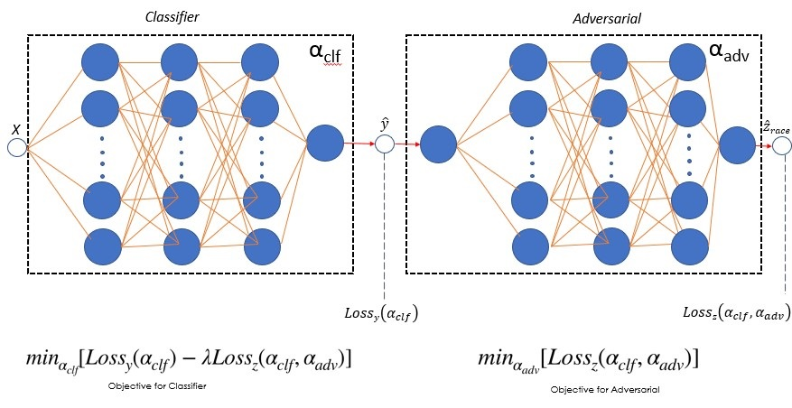

Fairness in Machine Learning
Eliminating bias in recidivism predictino data
Bias in ML arises due to many reasons such as skewed samples, tainted datasets, sample size parity, proxies or leaky parameters. Identifying and addressing bias in machine learning is increasingly imprtant today as we move towards automation in sensitive processes such as parsing applicants for a job, assigning credit score etc. In this project we analyzed and tried to reduce the bias in the recidivism prediction data done using COMPAS algorithm and was released by NorthPointe. We have found that the model is biased against the minorities and tried to decrease this bias by defining and maximizing the fairness index. Fig: In the ouput, we observed slight decrease in accuracy but significant improvement in the fairness index.
Fig: In the ouput, we observed slight decrease in accuracy but significant improvement in the fairness index.
The model uses 6 layer neural network with 3 layers for adversarial network used to predict the sesnitive parameter in our model (i.e. race). Our analysis also involved identifying proxies or leaky parameters that leak sensitive parameters such as race,gender,age etc even after masking or deleting the actual sensitive paramter in the model.
 Fig: Neural network architecture.